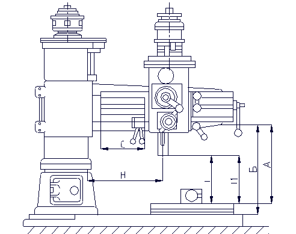
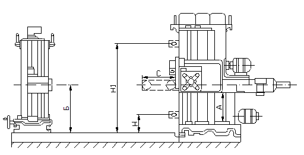

Сверлильный станок - станок для обработки отверстий со снятием стружки. На сверлильных станках производят сверление, рассверливание, зенкерование, развёртывание, растачивание, нарезание резьбы. Различают следующие типы сверлильных станков по металлу: вертикально-сверлильные, горизонтально-сверлильные, центровальные, многошпиндельные, агрегатные, специализированные и др.
Вертикально-сверлильный станок - наиболее распространённый тип в металлообработке; используется для получения отверстий в деталях относительно небольшого размера в условиях индивидуального и мелкосерийного производства, в ремонтных цехах и т. п. Инструмент сверло, зенковка, развёртка и др. закрепляют в вертикальном шпинделе, деталь — на столе станка. Совмещение осей обрабатываемого отверстия и инструмента производят перемещением детали. Для ориентации заготовки и автоматизации обработки применяют также программное управление. Для обработки отверстий диаметром до 12 мм (например, в приборостроении) используют настольные станки (обычно одношпиндельные). Тяжёлые и крупногабаритные детали, а также детали с отверстиями, расположенными по дуге окружности, обрабатывают на радиально-сверлильном станке. На этом сверлильном станке совмещение осей обрабатываемого отверстия и инструмента осуществляют перемещением шпинделя относительно неподвижной детали. Горизонтально-сверлильный станок обычно используют при обработке глубоких отверстий (например, в осях, валах, стволах стрелковых и артиллерийских систем и т. п.). Центровальные станки служат для получения в торцах заготовок центровых отверстий. Иногда центровальные станки оснащаются отрезными суппортами с резками для отрезки заготовки перед центрованием (центровально-отрезной станок). Для одновременной обработки (главным образом сверления) нескольких отверстий применяют многошпиндельные сверлильные станки со сверлильными головками.
Расточный станок - металлорежущий станок для сверления, зенкерования, развёртывания, растачивания, нарезания резьбы, обтачивания цилиндрических поверхностей и торцов, фрезерования. Наиболее распространены универсальные горизонтально-расточные станки. Для выполнения ряда операций используют алмазно-расточные станки,а также координатно-расточные станки.
Универсальный расточной станок имеет горизонтальный шпиндель, смонтированный в бабке, которая перемещается вверх и вниз по передней стойке. Приняты 3 основных типа компоновки: станки для обработки мелких и средних изделий со шпинделем диаметром до 125 мм, столом, перемещающимся в двух взаимно перпендикулярных направлениях, и неподвижной передней стойкой; станки для обработки средних и крупных изделий со шпинделем диаметром от 100 до 200 мм, столом и передней стойкой, перемещающимися во взаимно перпендикулярных направлениях; станки для обработки особо крупных изделий со шпинделем диаметром от 125 до 320 мм, без стола, с передней стойкой (колонкой), перемещающейся в одном или двух направлениях.
Шпиндельный узел, обеспечивающий станку широкую универсальность, состоит из полого шпинделя, несущего планшайбу с расточным резцом (главное движение), и внутреннего расточного шпинделя, перемещающегося в осевом направлении (движение подачи). Наличие имеющих раздельные приводы планшайбы с радиальным суппортом и внутреннего шпинделя, использование различных приспособлений значительно расширяют технологические возможности станка (например, совмещение переходов).
Тенденции развития расточных станков — повышение жёсткости и виброустойчивости, снижение трения в подвижных узлах, применение системы цифровой индикации, числового программного управления, методов дистанционного наблюдения и контроля за процессом обработки (главным образом в тяжёлых и уникальных станках).
Координатно-расточной станок - металлорежущий станок для чистовой обработки отверстий, плоскостей, пазов с особо точным расположением центров или поверхностей без применения специальных приспособлений для направления инструментов. На координатно-расточном станке производят растачивание, сверление, зенкерование, развёртывание, фрезерование и др. виды обработки в индивидуальном и мелкосерийном производствах при изготовлении режущих и измерительных инструментов, кондукторов, штампов, а также ответственных деталей машин и приборов.
Для точного измерения размеров на координатно-расточных станках применяются устройства с жёсткими и регулируемыми концевыми мерами и индикаторными датчиками; ходовые винты с лимбами и нониусом, снабженные компенсаторами для устранения погрешностей; масштабные валики с оптическими измерительными приборами.
Различают станки двух видов: двухстоечные (портальные) со столом, имеющим одно перемещение, и одностоечные со столом, имеющим два перемещения. У одностоечных станков шпиндельная головка движется только вертикально, у двухстоечных — горизонтально по поперечине, которая может перемещаться в вертикальном направлении. На координатно-расточных станках изделия и режущий инструмент взаимно перемещаются в прямоугольных координатах (с точностью линейных перемещений до 2 мкм). Конструкция координатно-расточных станков выполняется особо жёсткой, с плавными передачами движений и тщательной балансировкой быстровращающихся деталей (для уменьшения вибрации). Устанавливают станки в изолированных помещениях, в которых поддерживается постоянная температура 20 °С. Координатно-расточные станки обслуживаются рабочими высшей квалификации.